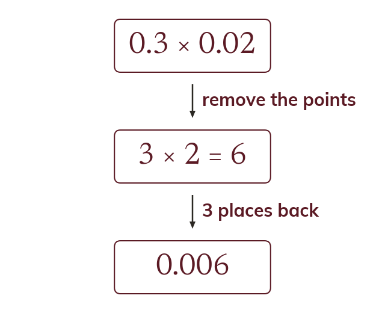

Whole numbers first
Multiply as whole numbers first, then place the point. The answer has as many decimal places as the two numbers together.
A decimal multiplication can be worked with whole numbers first, and the point placed at the end. The answer has as many decimal places as the two numbers have between them.